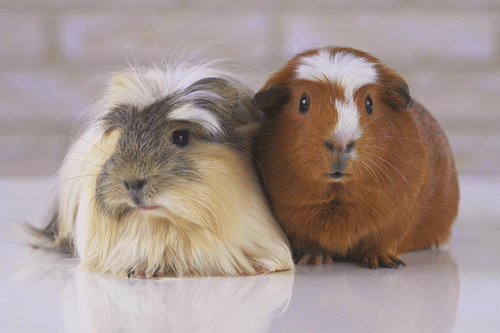

Sobre nosotros
¿Quiénes somos?
Hola! Somos Juan y Pedro, dos psicólogos apasionados por la intervención asistida con animales y fundadores de “Centro Armonía Animal”, una institución dedicada a la terapia emocional con cobayas.
Yo, Juan, soy especialista en psicología infantil, y me destaco por el trato cálido y la capacidad de crear espacios lúdicos donde los niños se sienten seguros para explorar emociones. Pedro, está enfocado en adultos mayores, aporta una mirada serena y profunda, y combina técnicas de regulación emocional con actividades de estimulación cognitiva. Juntos, hemos creado este centro con el objetivo de ofrecer un enfoque innovador y efectivo para el bienestar emocional, utilizando la ternura y calma que transmiten las cobayas como puente terapéutico.
Nuestro centro, instalaciones y equipo
En nuestro centro, las sesiones se desarrollan en salas amplias, iluminadas y adaptadas según la edad del paciente. Cuentan con un corral terapéutico donde las cobayas se mueven libremente, áreas de observación tranquila y rincones de interacción directa.
El centro también dispone de un espacio exterior con jardines sensoriales, donde las sesiones pueden trasladarse para trabajar relajación y atención plena. En conjunto, hemos creado un ambiente acogedor, terapéutico y lleno de vida en el que niños y adultos mayores pueden encontrar bienestar a través del vínculo con las cobayas.
Además del trabajo en la institución, ofrecemos sesiones terapéuticas a domicilio, llevando las cobayas y el material necesario al hogar del paciente. Esto resulta especialmente útil para adultos mayores con movilidad reducida o para niños que se sienten más seguros en su entorno familiar, manteniendo siempre el mismo nivel de calidad, higiene y acompañamiento profesional.
